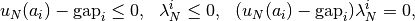
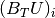
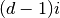
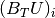
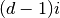
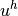
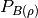
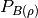
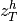
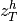

Small sliding contact with friction bricks¶
The aim of these bricks is to take into account a contact condition with or without friction of an elastic structure on a rigid foundation or between two elastic structures. These bricks are restricted to small deformation approximation of contact (this may include large deformations on a flat obstacle).
Approximation of contact¶
For small deformation problems submitted a simple (compared to large deformation !) expression of the contact with friction condition is usually used where the tangential displacement do not influence the normal one. This is an approximation in the sense that if an obstacle is not perfectly flat, the tangential displacement of course influence the point where the contact holds. This will not be the case in small deformation where the contact condition can be considered to be described on the reference configuration.
There are mainly two largely used discretizations of the contact with friction condition in this framework: a direct nodal contact condition (usually prescribed on the displacement finite element nodes) or a weak nodal contact condition (usually prescribed on the multiplier finite element nodes). The two discretization leads to similar system. However, the interpretation of quantities is not the same. A third approach is developed on Getfem contact bricks: a weak integral contact condition. It needs the computation of a non-linear integral on the contact boundary at each iteration but the numerical resolution is potentially more scalable because it derives directly from continuous principles.
More details can be found for instance in [KI-OD1988], [KH-PO-RE2006] and [LA-RE2006].
Direct nodal contact condition¶
A nodal contact condition consists in a certain number of contact nodes  ,
,  on which a contact with (or without) friction condition is applied. The contact condition reads
on which a contact with (or without) friction condition is applied. The contact condition reads

where is the equivalent nodal contact force on and is the normal relative displacement between the elastic solid and an obstacle or between two elastic solids. The term represents the normal gap between the two solids in the reference configuration. The friction condition reads
where is the relative slip velocity,  is the friction coefficient and the equivalent nodal friction force on . The friction condition can be summarized by the inclusion
is the friction coefficient and the equivalent nodal friction force on . The friction condition can be summarized by the inclusion
where is the multivalued map being the sub-differential of (i.e. when and the closed unit ball). For two dimensional cases, reduces to where is the multivalued sign map.
A complete linearized elasticity problem with contact with friction reads as
Given an augmentation parameter , the contact and friction conditions can be equivalently expressed in term of projection as
where  is the projection on the convex
is the projection on the convex  and is the ball of center
and is the ball of center  and radius .
These expressions will be used to perform a semi-smooth Newton method.
and radius .
These expressions will be used to perform a semi-smooth Newton method.
Suppose now that you approximate a linearized elasticity problem submitted to contact with friction. Then, if  is the vector of the unknown for the displacement you will be able to express the matrices and such that
is the vector of the unknown for the displacement you will be able to express the matrices and such that
where is the dimension of the domain and . The expression of the elasticity problem with contact with friction can be written as
where  is a parameter which can be added for the homogenization of the augmentation parameter,  denotes here the sub-vector of indices from to  for the sake of simplicity and the sliding velocity have been discretized into with
is a parameter which can be added for the homogenization of the augmentation parameter,  denotes here the sub-vector of indices from to  for the sake of simplicity and the sliding velocity have been discretized into with  the displacement at the previous time step. Note that of course another discretization of the sliding velocity is possible and that the time step do not appear in the expression of the friction condition since it does not influence the direction of the sliding velocity.
the displacement at the previous time step. Note that of course another discretization of the sliding velocity is possible and that the time step do not appear in the expression of the friction condition since it does not influence the direction of the sliding velocity.
In that case, the homogenization coefficient can be taken proportional to ( being the diameter of the element). In this way, the augmentation parameter can be expressed in and chosen closed to the Young modulus of the elastic body. Note that the solution is not sensitive to the value of the augmentation parameter.
being the diameter of the element). In this way, the augmentation parameter can be expressed in and chosen closed to the Young modulus of the elastic body. Note that the solution is not sensitive to the value of the augmentation parameter.
Weak nodal contact condition¶
The direct nodal condition may have some drawback : locking phenomena, over-constraint. It is in fact often more stable and for the same accuracy to use multiplier of reduced order compared to the displacement (the direct nodal contact condition corresponds more or less to a multiplier described on the same finite element method than the displacement).
Let  be the shapes functions of the finite element describing the displacement and be the shape functions of a finite element describing a multiplier on the contact boundary . It is assumed that the set of admissible multiplier describing the normal stress will be
be the shapes functions of the finite element describing the displacement and be the shape functions of a finite element describing a multiplier on the contact boundary . It is assumed that the set of admissible multiplier describing the normal stress will be
where ,  are the finite element nodes corresponding to the multiplier. The discrete contact condition is now expressed in a weak form by
are the finite element nodes corresponding to the multiplier. The discrete contact condition is now expressed in a weak form by
In that case, the component is a contact stress () and the matrix can be written
The matrix can also be written in a similar way. The friction condition can be written in a weak form
where is the discrete set of admissible friction stress.
Finally, the expression of the direct nodal contact condition are recovered
except that now and are force densities, and has to be now chosen proportional to such that the augmentation parameter can still be chosen close to the Young modulus of the elastic body.
Note that without additional stabilization technique (see [HI-RE2010]) an inf-sup condition have to be satisfied between the finite element of the displacement and the one for the multipliers. This means in particular that the finite element for the multiplier have to be “less rich” than the one for the displacement.
Weak integral contact condition¶
The weak integral contact formulation allows not to explicitly describe the discrete set of admissible stress. See also Generic Nitsche’s method for contact with friction condition. The contact stress (including the friction one) is described on a finite element space on the contact boundary :
where is the dimension of the problem and still the shapes functions on which the contact stress is developed. Now, given a outward unit vector  on the contact boundary (usually the normal to the obstacle), we make the standard decompositions:
on the contact boundary (usually the normal to the obstacle), we make the standard decompositions:
where  is the displacement field approximated on a finite element space  . This allows to express the contact condition in the following way
. This allows to express the contact condition in the following way
where is a given initial gap in reference configuration, is an augmentation parameter and  is the negative part. The friction condition can similarly be written:
is the negative part. The friction condition can similarly be written:
where is the closed ball of center and radius  and  is the orthogonal projection on it (By convenyion, the ball reduces to the origin dor ). The term represent here an approximation of the sliding velocity. The parameter
and  is the orthogonal projection on it (By convenyion, the ball reduces to the origin dor ). The term represent here an approximation of the sliding velocity. The parameter  and the field have to be adapted with respect to the chosen approximation. For instance, if the standard finite difference
and the field have to be adapted with respect to the chosen approximation. For instance, if the standard finite difference
is chosen, then one has to take and . Note that due to the symmetry of the ball, the parameter do not play an important role in the formulation. It can simply be viewed as a scaling between the augmentation parameter for the contact condition and the one for the friction condition. Note also that contrarily to the previous formulations of contact, here there is not a strict independance of the conditions with respect to the augmentation parameter (the independance only occurs at the continuous level).
GetFEM++ bricks implement four versions of the contact condition derived from the Alart-Curnier augmented Lagrangian formulation [AL-CU1991]. The first one corresponds to the non-symmetric version. It consists in solving:
where and represent the remaining parts of the problem in  , for instance linear elasticity and . Note that in this case, the mathematical analysis leads to choose a value for the augmentation parameter of the kind with having the dimension of a elasticity modulus (a classical choice is the value of Young’s modulus). In order to write a Newton iteration, one has to derive the tangent system. It can be written, reporting only the contact and friction terms and not the right hand side:
, for instance linear elasticity and . Note that in this case, the mathematical analysis leads to choose a value for the augmentation parameter of the kind with having the dimension of a elasticity modulus (a classical choice is the value of Young’s modulus). In order to write a Newton iteration, one has to derive the tangent system. It can be written, reporting only the contact and friction terms and not the right hand side:
![\left\{\begin{array}{l}
\cdots - \displaystyle \int_{\Gamma_c} \delta_{\lambda} \cdot v d\Gamma = \cdots ~~~~ \forall v^h \in V^h, \\
\displaystyle -\frac{1}{r}\int_{\Gamma_c}(1-H(r(u^h_N-gap)-\lambda_N))\delta_{\lambda_N}\mu^h_N d\Gamma
\displaystyle -\int_{\Gamma_c}H(r(u^h_N-gap)-\lambda_N)\delta_{u_N}\mu^h_N d\Gamma \\
~~~~~~\displaystyle -\frac{1}{r}\int_{\Gamma_c}(\delta_{\lambda_T} - D_xP_{B(\rho)}(\lambda^h_T - r\alpha(u^h_T-w^h_T))\delta_{\lambda_T})\cdot\mu^h_T d\Gamma \\
~~~~~~\displaystyle -\int_{\Gamma_c}\alpha D_xP_{B(\rho)}(\lambda^h_T - r\alpha(u^h_T-w^h_T))\delta_{u_T}\cdot\mu^h_T d\Gamma \\
~~~~~~ \displaystyle +\int_{\Gamma_c}({\mathscr F} D_{\rho}P_{B(\rho)}(\lambda^h_T - r\alpha(u^h_T-w^h_T))\delta_{u_N})\cdot\mu^h_T d\Gamma \\
~~~~~~ \displaystyle -\int_{\Gamma_c}(\frac{\mathscr F}{r} D_{\rho}P_{B(\rho)}(\lambda^h_T - r\alpha(u^h_T-w^h_T))\delta_{\lambda_N})\cdot\mu^h_T d\Gamma = \cdots ~~~ \forall \mu^h \in W^h,
\end{array}\right.](../_images/math/19aa2a60296df9825e09cda0dbec78832a5d2eb8.png)
where is the Heaviside function (0 for a negative argument and 1 for a non-negative argument), and are the derivatives of the projection on (assumed to vanish for ) and and are the unknown corresponding to the tangent problem.
The second version corresponds to the “symmetric” version. It is in fact symmetric in the frictionless case only (because in this case it directly derives from the augmented Lagrangian formulation). It reads:
![\left\{\begin{array}{l}
a(u^h, v^h) + \displaystyle \int_{\Gamma_c} (\lambda^h_N - r(u^h_N-gap))_- v^h_N d\Gamma \\
~~~~~~ - \displaystyle \int_{\Gamma_c} P_{B(\rho)}(\lambda^h_T - r\alpha(u^h_T-w^h_T)))\cdot v^h_T d\Gamma = \ell(v^h) ~~~~ \forall v^h \in V^h, \\
\displaystyle -\frac{1}{r}\int_{\Gamma_c} (\lambda^h_N + (\lambda^h_N - r(u^h_N-gap))_-)\mu^h_N d\Gamma \\
~~~~~~~~~~\displaystyle -\frac{1}{r}\int_{\Gamma_c} (\lambda^h_T -P_{B(\rho)}(\lambda^h_T - r\alpha(u^h_T-w^h_T)))\cdot \mu^h_T d\Gamma = 0 ~~~~ \forall \mu^h \in W^h,
\end{array}\right.](../_images/math/0510b8d1e23fb5f9f0eeff47959d3fc14402ff33.png)
and the tangent system:
![\left\{\begin{array}{l}
\cdots + \displaystyle \int_{\Gamma_c} rH(r(u^h_N-gap)-\lambda_N)\delta_{u_N} v_N - H(r(u^h_N-gap)-\lambda_N)\delta_{\lambda_N} v_N d\Gamma \\
~~~~~~+ \displaystyle \int_{\Gamma_c} r \alpha D_xP_{B(\rho)}(\lambda^h_T - r\alpha(u^h_T-w^h_T)) \delta_{u_T}\cdot v^h_T d\Gamma \\
~~~~~~- \displaystyle \int_{\Gamma_c} D_xP_{B(\rho)}(\lambda^h_T - r\alpha(u^h_T-w^h_T)) \delta_{\lambda_T}\cdot v^h_T d\Gamma \\
~~~~~~- \displaystyle \int_{\Gamma_c} (r{\mathscr F} D_{\rho}P_{B(\rho)}(\lambda^h_T - r\alpha(u^h_T-w^h_T)) \delta_{u_N})\cdot v^h_T d\Gamma \\
~~~~~~- \displaystyle \int_{\Gamma_c} ({\mathscr F} D_{\rho}P_{B(\rho)}(\lambda^h_T - r\alpha(u^h_T-w^h_T)) \delta_{\lambda_N})\cdot v^h_T d\Gamma = \cdots ~~~~ \forall v^h \in V^h, \\
\displaystyle -\frac{1}{r}\int_{\Gamma_c}(1-H(r(u^h_N-gap)-\lambda_N))\delta_{\lambda_N}\mu^h_N d\Gamma
\displaystyle -\int_{\Gamma_c}H(r(u^h_N-gap)-\lambda_N)\delta_{u_N}\mu^h_N d\Gamma \\
~~~~~~\displaystyle -\frac{1}{r}\int_{\Gamma_c}(\delta_{\lambda_T} - D_xP_{B(\rho)}(\lambda^h_T - r\alpha(u^h_T-w^h_T))\delta_{\lambda_T})\cdot\mu^h_T d\Gamma \\
~~~~~~\displaystyle -\int_{\Gamma_c}\alpha D_xP_{B(\rho)}(\lambda^h_T - r\alpha(u^h_T-w^h_T))\delta_{u_T}\cdot\mu^h_T d\Gamma \\
~~~~~~ \displaystyle +\int_{\Gamma_c}({\mathscr F} D_{\rho}P_{B(\rho)}(\lambda^h_T - r\alpha(u^h_T-w^h_T))\delta_{u_N})\cdot\mu^h_T d\Gamma \\
~~~~~~ \displaystyle -\int_{\Gamma_c}(\frac{\mathscr F}{r} D_{\rho}P_{B(\rho)}(\lambda^h_T - r\alpha(u^h_T-w^h_T))\delta_{\lambda_N})\cdot\mu^h_T d\Gamma = \cdots ~~~ \forall \mu^h \in W^h,
\end{array}\right.](../_images/math/6fbfa845906e338b4bd6db27bf6dae50e501a92b.png)
still with .
The third version corresponds to a penalized contact and friction condition. It does not require the use of a multiplier. In this version, the parameter is a penalization parameter and as to be large enough to perform a good approximation of the non-penetration and the Coulomb friction conditions. The formulation reads:
and the tangent system:
Numerical continuation¶
In addition, GetFEM++ develops a method of numerical continuation for finding numerical solutions of discretized evolutionary contact problems based on the weak integral contact condition (see Numerical continuation and bifurcation for a general introduction). For this purpose, a parameter-dependent sliding velocity may be added to the friction condition so that it becomes:
Here,  is a parameter and  is an initial sliding velocity. It is worth mentioning that if one chooses
is a parameter and  is an initial sliding velocity. It is worth mentioning that if one chooses
then he recovers the standard friction condition at time  and for equal to 0 and 1, respectively.
and for equal to 0 and 1, respectively.
Friction law¶
Apart from pure Coulomb friction , the weak integral contact framework in GetFEM++ also supports a more generic friction law description:
In this equation is the admissible friction stress for a given
normal stress , is the coefficient of friction,
is an adhesional (load-independent) shear stress and
 is a maximum shear stress limit.
is a maximum shear stress limit.
{kind=link}
Add a contact with or without friction to a model¶
Frictionless basic contact brick¶
In order to add a frictionless contact brick you call the model object method:
getfem::add_basic_contact_brick
(md, varname_u, multname_n, dataname_r, BN, dataname_gap, dataname_alpha, aug_version);
This function adds a frictionless contact brick on varname_u thanks to a multiplier variable multname_n. If is the vector of degrees of freedom on which the unilateral constraint is applied, the matrix have to be such that this condition is defined by  . The constraint is prescribed thank to a multiplier multname_n whose dimension should be equal to the number of lines of . The variable dataname_r is the name of the augmentation parameter should be chosen in a range of acceptable values. dataname_gap is an optional parameter representing the initial gap. It can be a single value or a vector of value. dataname_alpha is an optional homogenization parameter for the augmentation parameter.
. The constraint is prescribed thank to a multiplier multname_n whose dimension should be equal to the number of lines of . The variable dataname_r is the name of the augmentation parameter should be chosen in a range of acceptable values. dataname_gap is an optional parameter representing the initial gap. It can be a single value or a vector of value. dataname_alpha is an optional homogenization parameter for the augmentation parameter.
The parameter aug_version indicates the augmentation strategy : 1 for the non-symmetric Alart-Curnier augmented Lagrangian, 2 for the symmetric one, 3 for the unsymmetric method based on augmented multipliers.
Note that is possible to change the basic contact matrix by using:
getfem::contact_brick_set_BN(md, indbrick);
Basic contact brick with friction¶
- getfem::add_basic_contact_brick
- (md, varname_u, multname_n, multname_t, dataname_r, BN, dataname_friction_coeff, dataname_gap, dataname_alpha, aug_version);
This function adds a contact brick with friction on varname_u thanks to two
multiplier variables multname_n and multname_t. If U is the vector
of degrees of freedom on which the condition is applied,
the matrix B_N has to be such that the contact condition is defined
by  and B_T have to be such that the relative
tangential
displacement is
and B_T have to be such that the relative
tangential
displacement is  . The matrix B_T should have as many rows as
B_N multiplied by
. The matrix B_T should have as many rows as
B_N multiplied by  where is the domain dimension.
The contact condition is prescribed thank to a multiplier
multname_n whose dimension should be equal to the number of rows of
B_N and the friction condition by a multiplier multname_t whose
size should be the number of rows of B_T.
The parameter dataname_friction_coeff describes the friction
coefficient. It could be a scalar or a vector describing the
coefficient on each contact condition.
The augmentation parameter r should be chosen in a range of acceptable values
(see Getfem user documentation). dataname_gap is an
optional parameter representing the initial gap. It can be a single value
or a vector of value. dataname_alpha is an optional homogenization
parameter for the augmentation parameter.
where is the domain dimension.
The contact condition is prescribed thank to a multiplier
multname_n whose dimension should be equal to the number of rows of
B_N and the friction condition by a multiplier multname_t whose
size should be the number of rows of B_T.
The parameter dataname_friction_coeff describes the friction
coefficient. It could be a scalar or a vector describing the
coefficient on each contact condition.
The augmentation parameter r should be chosen in a range of acceptable values
(see Getfem user documentation). dataname_gap is an
optional parameter representing the initial gap. It can be a single value
or a vector of value. dataname_alpha is an optional homogenization
parameter for the augmentation parameter.
The parameter aug_version indicates the augmentation strategy : 1 for the non-symmetric Alart-Curnier augmented Lagrangian, 2 for the symmetric one, 3 for the unsymmetric method based on augmented multipliers and 4 for the unsymmetric method based on augmented multipliers with De Saxce projection.
Note that is possible to change the basic contact matrices and by using:
getfem::contact_brick_set_BN(md, indbrick);
getfem::contact_brick_set_BT(md, indbrick);
Frictionless nodal contact with a rigid obstacle brick¶
- getfem::add_nodal_contact_with_rigid_obstacle_brick
- (md, mim, varname_u, multname_n, dataname_r, region, obstacle, aug_version);
This function adds a direct nodal frictionless contact condition with a rigid obstacle to the model. The condition is applied on the variable varname_u
on the boundary corresponding to region. The rigid obstacle should
be described with the string obstacle being a signed distance to
the obstacle. This string should be an expression where the coordinates
are ‘x’, ‘y’ in 2D and ‘x’, ‘y’, ‘z’ in 3D. For instance, if the rigid
obstacle correspond to  , the corresponding signed distance will
be simply ‘z’. multname_n should be a fixed size variable whose size is
the number of degrees of freedom on boundary region. It represents the
contact equivalent nodal forces.
The augmentation parameter r should be chosen in a
range of acceptable values (close to the Young modulus of the elastic
body, see Getfem user documentation). 1 for the non-symmetric Alart-Curnier augmented Lagrangian, 2 for the symmetric one, 3 for the unsymmetric method based on augmented multipliers.
, the corresponding signed distance will
be simply ‘z’. multname_n should be a fixed size variable whose size is
the number of degrees of freedom on boundary region. It represents the
contact equivalent nodal forces.
The augmentation parameter r should be chosen in a
range of acceptable values (close to the Young modulus of the elastic
body, see Getfem user documentation). 1 for the non-symmetric Alart-Curnier augmented Lagrangian, 2 for the symmetric one, 3 for the unsymmetric method based on augmented multipliers.
Nodal contact with a rigid obstacle brick with friction¶
- getfem::add_nodal_contact_with_rigid_obstacle_brick
- (md, mim, varname_u, multname_n, multname_t, dataname_r, dataname_friction_coeff, region, obstacle, aug_version);
This function adds a direct nodal contact with friction condition with a rigid
obstacle to the model. The condition is applied on the variable varname_u
on the boundary corresponding to region. The rigid obstacle should
be described with the string obstacle being a signed distance to
the obstacle. This string should be an expression where the coordinates
are ‘x’, ‘y’ in 2D and ‘x’, ‘y’, ‘z’ in 3D. For instance, if the rigid
obstacle correspond to , the corresponding signed distance will
be simply ‘z’. multname_n should be a fixed size variable whose size is
the number of degrees of freedom on boundary region. It represents the
contact equivalent nodal forces.
multname_t should be a fixed size variable whose size is
the number of degrees of freedom on boundary region multiplied by
where is the domain dimension. It represents the
friction equivalent nodal forces.
The augmentation parameter r should be chosen in a
range of acceptable values (close to the Young modulus of the elastic
body, see Getfem user documentation). dataname_friction_coeff is
the friction coefficient. It could be a scalar or a vector of values
representing the friction coefficient on each contact node.
The parameter aug_version indicates the augmentation strategy : 1 for the non-symmetric Alart-Curnier augmented Lagrangian, 2 for the symmetric one, 3 for the unsymmetric method based on augmented multipliers and 4 for the unsymmetric method based on augmented multipliers with De Saxce projection.
Frictionless nodal contact between non-matching meshes brick¶
- getfem::add_nodal_contact_between_nonmatching_meshes_brick
- (md, mim1, mim2, varname_u1, varname_u2, multname_n, dataname_r, rg1, rg2, slave1=true, slave2=false, aug_version=1);
This function adds a frictionless contact condition between two faces of one or two elastic bodies. The condition is applied on the variable varname_u or the variables varname_u1 and varname_u2 depending if a single or two distinct displacement fields are given. Vectors rg1 and rg2 contain pairs of regions expected to come in contact with each other. In case of a single region per side, rg1 and rg2 can be given as normal integers. In the single displacement variable case the regions defined in both rg1 and rg2 refer to the variable varname_u. In the case of two displacement variables, rg1 refers to varname_u1 and rg2 refers to varname_u2. multname_n should be a fixed size variable whose size is the number of degrees of freedom on those regions among the ones defined in rg1 and rg2 which are characterized as “slaves”. It represents the contact equivalent nodal forces. The augmentation parameter r should be chosen in a range of acceptabe values (close to the Young modulus of the elastic body, see Getfem user documentation). The optional parameters slave1 and slave2 declare if the regions defined in rg1 and rg2 are correspondingly considered as “slaves”. By default slave1 is true and slave2 is false, i.e. rg1 contains the slave surfaces, while rg2 the master surfaces. Preferably only one of slave1 and slave2 is set to true.
The parameter aug_version indicates the augmentation strategy : 1 for the non-symmetric Alart-Curnier augmented Lagrangian, 2 for the symmetric one, 3 for the unsymmetric method with augmented multiplier.
Basically, this brick computes the matrix and the vectors gap and alpha and calls the basic contact brick.
Nodal contact between non-matching meshes brick with friction¶
- getfem::add_nodal_contact_between_nonmatching_meshes_brick
- (md, mim1, mim2, varname_u1, varname_u2, multname_n, multname_t,
- dataname_r, dataname_friction_coeff, rg1, rg2, slave1=true, slave2=false, aug_version=1);
This function adds a contact with friction condition between two faces of one or two elastic bodies. The condition is applied on the variable varname_u or the variables varname_u1 and varname_u2 depending if a single or two distinct displacement fields are given. Vectors rg1 and rg2 contain pairs of regions expected to come in contact with each other. In case of a single region per side, rg1 and rg2 can be given as normal integers. In the single displacement variable case the regions defined in both rg1 and rg2 refer to the variable varname_u. In the case of two displacement variables, rg1 refers to varname_u1 and rg2 refers to varname_u2. multname_n should be a fixed size variable whose size is the number of degrees of freedom on those regions among the ones defined in rg1 and rg2 which are characterized as “slaves”. It represents the contact equivalent nodal normal forces. multname_t should be a fixed size variable whose size corresponds to the size of multname_n multiplied by qdim - 1 . It represents the contact equivalent nodal tangent (frictional) forces. The augmentation parameter r should be chosen in a range of acceptabe values (close to the Young modulus of the elastic body, see Getfem user documentation). The friction coefficient stored in the parameter friction_coeff is either a single value or a vector of the same size as multname_n. The optional parameters slave1 and slave2 declare if the regions defined in rg1 and rg2 are correspondingly considered as “slaves”. By default slave1 is true and slave2 is false, i.e. rg1 contains the slave surfaces, while rg2 the master surfaces. Preferably only one of slave1 and slave2 is set to true.
The parameter aug_version indicates the augmentation strategy : 1 for the non-symmetric Alart-Curnier augmented Lagrangian, 2 for the symmetric one, 3 for the unsymmetric method with augmented multiplier and 4 for the unsymmetric method with augmented multiplier and De Saxce projection.
Basically, this brick computes the matrices and as well the vectors gap and alpha and calls the basic contact brick.
Hughes stabilized frictionless contact condition¶
In order to add a Hughes stabilized frictionless contact brick you call the model object method:
getfem::add_Hughes_stab_basic_contact_brick
(md, varname_u, multname_n, dataname_r, BN, DN, dataname_gap, dataname_alpha, aug_version);
This function adds a Hughes stabilized frictionless contact brick on varname_u thanks to a multiplier variable multname_n. If we take is the vector of degrees of freedom on which the unilateral constraint is applied, and  the multiplier Vector of contact force. Then Hughes stabilized frictionless contact condition is defined by the matrix and have to be such that this condition is defined by . Where is the mass matrix relative to stabilized term. The variable dataname_r is the name of the augmentation parameter should be chosen in a range of acceptable values. dataname_gap is an optional parameter representing the initial gap. It can be a single value or a vector of value. dataname_alpha is an optional homogenization parameter for the augmentation parameter.
the multiplier Vector of contact force. Then Hughes stabilized frictionless contact condition is defined by the matrix and have to be such that this condition is defined by . Where is the mass matrix relative to stabilized term. The variable dataname_r is the name of the augmentation parameter should be chosen in a range of acceptable values. dataname_gap is an optional parameter representing the initial gap. It can be a single value or a vector of value. dataname_alpha is an optional homogenization parameter for the augmentation parameter.
The parameter aug_version indicates the augmentation strategy : 1 for the non-symmetric Alart-Curnier augmented Lagrangian, 2 for the symmetric one, 3 for the unsymmetric method based on augmented multipliers.
Note that the matrix is a sum of the basic contact term and the Hughes stabilised term. You can change it with:
getfem::contact_brick_set_DN(md, indbrick);
Frictionless integral contact with a rigid obstacle brick¶
getfem::add_integral_contact_with_rigid_obstacle_brick
(md, mim, varname_u, multname_n, dataname_obs, dataname_r, region, option = 1);
This function adds a frictionless contact condition with a rigid obstacle to the model, which is defined in an integral way. It is the direct approximation of an augmented Lagrangian formulation defined at the continuous level. The advantage should be a better scalability: the number of Newton iterations should be more or less independent of the mesh size. The condition is applied on the variable varname_u on the boundary corresponding to region. The rigid obstacle should be described with the data dataname_obstacle being a signed distance to the obstacle (interpolated on a finite element method). multname_n should be a fem variable representing the contact stress. An inf-sup condition between multname_n and varname_u is required. The augmentation parameter dataname_r should be chosen in a range of acceptable values.
Possible values for option is 1 for the non-symmetric Alart-Curnier augmented Lagrangian method, 2 for the symmetric one, 3 for the non-symmetric Alart-Curnier method with an additional augmentation and 4 for a new unsymmetric method. The default value is 1.
mim represents of course the integration method. Note that it should be accurate enough to integrate efficiently the nonlinear terms involved.
Integral contact with a rigid obstacle brick with friction¶
getfem::add_integral_contact_with_rigid_obstacle_brick
(md, mim, varname_u, multname_n, dataname_obs, dataname_r,
dataname_friction_coeffs, region, option = 1, dataname_alpha = "",
dataname_wt = "", dataname_gamma = "", dataname_vt = "");
This function adds a contact with friction condition with a rigid obstacle to the model, which is defined in an integral way. It is the direct approximation of an augmented Lagrangian formulation defined at the continuous level. The advantage should be a better scalability: the number of Newton iterations should be more or less independent of the mesh size. The condition is applied on the variable varname_u on the boundary corresponding to region. The rigid obstacle should be described with the data dataname_obstacle being a signed distance to the obstacle (interpolated on a finite element method). multname_n should be a fem variable representing the contact stress. An inf-sup condition between multname_n and varname_u is required. The augmentation parameter dataname_r should be chosen in a range of acceptable values.
The parameter dataname_friction_coeffs contains the Coulomb friction coefficient and optionally an adhesional shear stress threshold and the tresca limit shear stress. For constant coefficients its size is from 1 to 3. For coefficients described on a finite element method, this vector contains a number of single values, value pairs or triplets equal to the number of the corresponding mesh_fem’s basic dofs.
Possible values for option is 1 for the non-symmetric Alart-Curnier augmented Lagrangian method, 2 for the symmetric one, 3 for the non-symmetric Alart-Curnier method with an additional augmentation and 4 for a new unsymmetric method. The default value is 1. Option 4, assumes pure Coulomb friction and ignores any adhesional stress and tresca limit coefficients.
dataname_alpha and dataname_wt are optional parameters to solve evolutionary friction problems. dataname_gamma and dataname_vt denote optional data for adding a parameter-dependent sliding velocity to the friction condition. mim represents of course the integration method. Note that it should be accurate enough to integrate efficiently the nonlinear terms involved.
Frictionless integral contact between non-matching meshes brick¶
getfem::add_integral_contact_between_nonmatching_meshes_brick
(md, mim, varname_u1, varname_u2, multname_n, dataname_r,
region1, region2, option = 1);
This function adds a frictionless contact condition between nonmatching meshes to the model, which is defined in an integral way. It is the direct approximation of an augmented Lagrangian formulation defined at the continuous level. The advantage should be a better scalability: the number of Newton iterations should be more or less independent of the mesh size. The condition is applied on the variables varname_u1 and varname_u2 on the boundaries corresponding to region1 and region2. multname_n should be a fem variable representing the contact stress. An inf-sup condition between multname_n and varname_u1 and varname_u2 is required. The augmentation parameter dataname_r should be chosen in a range of acceptable values.
Possible values for option is 1 for the non-symmetric Alart-Curnier augmented Lagrangian method, 2 for the symmetric one, 3 for the non-symmetric Alart-Curnier method with an additional augmentation and 4 for a new unsymmetric method. The default value is 1.
mim represents of course the integration method. Note that it should be accurate enough to integrate efficiently the nonlinear terms involved.
Integral contact between non-matching meshes brick with friction¶
getfem::add_integral_contact_between_nonmatching_meshes_brick
(md, mim, varname_u1, varname_u2, multname, dataname_r,
dataname_friction_coeffs, region1, region2, option = 1,
dataname_alpha = "", dataname_wt1 = "", dataname_wt2 = "");
This function adds a contact with friction condition between nonmatching meshes to the model. This brick adds a contact which is defined in an integral way. It is the direct approximation of an augmented Lagrangian formulation defined at the continuous level. The advantage should be a better scalability: the number of Newton iterations should be more or less independent of the mesh size. The condition is applied on the variables varname_u1 and varname_u2 on the boundaries corresponding to region1 and region2. multname should be a fem variable representing the contact and friction stress. An inf-sup condition between multname and varname_u1 and varname_u2 is required. The augmentation parameter dataname_r should be chosen in a range of acceptable values.
The parameter dataname_friction_coeffs contains the Coulomb friction coefficient and optionally an adhesional shear stress threshold and the tresca limit shear stress. For constant coefficients its size is from 1 to 3. For coefficients described on a finite element method on the same mesh as varname_u1, this vector contains a number of single values, value pairs or triplets equal to the number of the corresponding mesh_fem’s basic dofs.
Possible values for option is 1 for the non-symmetric Alart-Curnier augmented Lagrangian method, 2 for the symmetric one, 3 for the non-symmetric Alart-Curnier method with an additional augmentation and 4 for a new unsymmetric method. The default value is 1. dataname_alpha, dataname_wt1 and dataname_wt2 are optional parameters to solve evolutionary friction problems. mim represents the integration method on the same mesh as varname_u1. Note that it should be accurate enough to integrate efficiently the nonlinear terms involved.
Frictionless penalized contact with a rigid obstacle brick¶
getfem::add_penalized_contact_with_rigid_obstacle_brick
(md, mim, varname_u, dataname_obs, dataname_r, region,
option = 1, dataname_lambda_n = "");
This function adds a frictionless penalized contact condition with a rigid obstacle to the model. The condition is applied on the variable varname_u on the boundary corresponding to region. The rigid obstacle should be described with the data dataname_obstacle being a signed distance to the obstacle (interpolated on a finite element method). The penalization parameter dataname_r should be chosen large enough to prescribe an approximate non-penetration condition but not too large not to deteriorate too much the conditioning of the tangent system. dataname_n is an optional parameter used if option is 2. In that case, the penalization term is shifted by lambda_n (this allows the use of an Uzawa algorithm on the corresponding augmented dLagrangian formulation)
Penalized contact with a rigid obstacle brick with friction¶
getfem::add_penalized_contact_with_rigid_obstacle_brick
(md, mim, varname_u, dataname_obs, dataname_r, dataname_friction_coeffs,
region, option = 1, dataname_lambda = "", dataname_alpha = "",
dataname_wt = "");
This function adds a penalized contact condition with Coulomb friction with a rigid obstacle to the model. The condition is applied on the variable varname_u on the boundary corresponding to region. The rigid obstacle should be described with the data dataname_obstacle being a signed distance to the obstacle (interpolated on a finite element method).
The parameter dataname_friction_coeffs contains the Coulomb friction coefficient and optionally an adhesional shear stress threshold and the tresca limit shear stress. For constant coefficients its size is from 1 to 3. For coefficients described on a finite element method, this vector contains a number of single values, value pairs or triplets equal to the number of the corresponding mesh_fem’s basic dofs.
The penalization parameter dataname_r should be chosen large enough to prescribe approximate non-penetration and friction conditions but not too large not to deteriorate too much the conditioning of the tangent system. dataname_lambda is an optional parameter used if option is 2. In that case, the penalization term is shifted by lambda (this allows the use of an Uzawa algorithm on the corresponding augmented Lagrangian formulation). dataname_alpha and dataname_wt are optional parameters to solve evolutionary friction problems.
Frictionless penalized contact between non-matching meshes brick¶
getfem::add_penalized_contact_between_nonmatching_meshes_brick
(md, mim, varname_u1, varname_u2, dataname_r,
region1, region2, option = 1, dataname_lambda_n = "");
This function adds a penalized contact frictionless condition between nonmatching meshes to the model. The condition is applied on the variables varname_u1 and varname_u2 on the boundaries corresponding to region1` and ``region2`. The penalization parameter ``dataname_r should be chosen large enough to prescribe an approximate non-penetration condition but not too large not to deteriorate too much the conditionning of the tangent system. dataname_n is an optional parameter used if option is 2. In that case, the penalization term is shifted by lambda_n (this allows the use of an Uzawa algorithm on the corresponding augmented Lagrangian formulation)
Penalized contact between non-matching meshes brick with friction¶
getfem::add_penalized_contact_between_nonmatching_meshes_brick
(md, mim, varname_u1, varname_u2, dataname_r, dataname_friction_coeffs,
region1, region2, option = 1, dataname_lambda = "",
dataname_alpha = "", dataname_wt1 = "", dataname_wt2 = "");
This function adds a penalized contact condition with Coulomb friction between nonmatching meshes to the model. The condition is applied on the variables varname_u1 and varname_u2 on the boundaries corresponding to region1` and ``region2`. The penalization parameter ``dataname_r should be chosen large enough to prescribe an approximate non-penetration condition but not too large not to deteriorate too much the conditionning of the tangent system.
The parameter dataname_friction_coeffs contains the Coulomb friction coefficient and optionally an adhesional shear stress threshold and the tresca limit shear stress. For constant coefficients its size is from 1 to 3. For coefficients described on a finite element method on the same mesh as varname_u1, this vector contains a number of single values, value pairs or triplets equal to the number of the corresponding mesh_fem’s basic dofs.
dataname_lambda is an optional parameter used if option is 2. In that case, the penalization term is shifted by lambda (this allows the use of an Uzawa algorithm on the corresponding augmented Lagrangian formulation) dataname_alpha, dataname_wt1 and dataname_wt2 are optional parameters to solve evolutionary friction problems. mim represents the integration method on the same mesh as varname_u1. Note that it should be accurate enough to integrate efficiently the nonlinear terms involved.

目次
- Small sliding contact with friction bricks
- Approximation of contact
- Direct nodal contact condition
- Weak nodal contact condition
- Weak integral contact condition
- Numerical continuation
- Friction law
- Add a contact with or without friction to a model
- Frictionless basic contact brick
- Basic contact brick with friction
- Frictionless nodal contact with a rigid obstacle brick
- Nodal contact with a rigid obstacle brick with friction
- Frictionless nodal contact between non-matching meshes brick
- Nodal contact between non-matching meshes brick with friction
- Hughes stabilized frictionless contact condition
- Frictionless integral contact with a rigid obstacle brick
- Integral contact with a rigid obstacle brick with friction
- Frictionless integral contact between non-matching meshes brick
- Integral contact between non-matching meshes brick with friction
- Frictionless penalized contact with a rigid obstacle brick
- Penalized contact with a rigid obstacle brick with friction
- Frictionless penalized contact between non-matching meshes brick
- Penalized contact between non-matching meshes brick with friction
前のトピックへ
The model tools for the integration of transient problems
次のトピックへ
Large sliding/large deformation contact with friction bricks
Download
Main documentations
- GetFEM++ User documentation
- Python Interface
- Matlab Interface
- Scilab Interface
- Gmm++
- GetFEM++ project